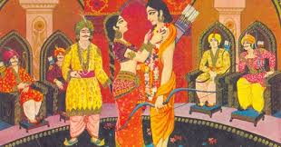
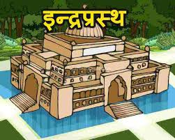
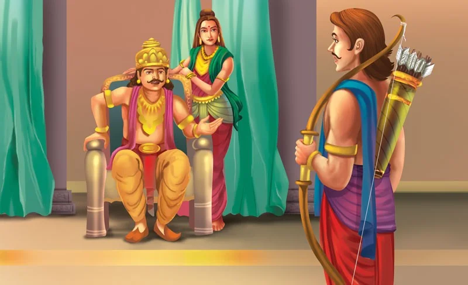

From Ekachakra, the Pandavas, disguised as Brahmins, arrived at Panchal to attend the swyambara ceremony of Draupadi. They already had heard of the heavenly beauty of Draupadi, the daughter of king Drupad. At the swyambara assembly, the Pandavas sat next to other Brahmins, away from the royal dignitaries. No one in the assembly recognized the Pandavas. Krishna, the king of Dwarka, was present as an honored guest. At the appropriate time, king Drupad greeted and honored all the participants and announced that his daughter Draupadi was going to enter the venue. Amidst the sounds of bugles, drums and melodious music, princess Draupadi, accompanied by her brother Dhrishtadyumna, entered the swyambara hall. As soon she entered, all eyes turned to her. She looked like a heavenly nymph. Within a short while, Dhrishtadyumna addressing the gathering said, "Honorable princes, you can see a fish hanging from a revolving wheel fixed on the top of a pole. The reflection of the fish is seen in a wide pan full of oil, placed at the bottom of the pole. The competitor, who hits the eye of the fish while looking at the image, shall win the hands of my sister Draupadi." A bow with arrows had been placed on the stage for the feat. The event began and a number of princes came forward and tried their luck one after another. But none of them were successful. One by one, they returned to their seats with a fallen face. When Karna's turn came Draupadi spoke out. She refused to marry Karna for lack of royal lineage. Karna was the son of a charioteer. Karna left the hall in resentment. Drupad and Dhrishtadyumna were getting worried since all of the princes present at the function had failed. Finally, Arjuna, in the disguise of a Brahmin got up and advanced towards the stage. People were amazed to see a Brahmin challenging the valiant princes. Being a Brahmin in disguise, who belong to a superior cast than the Kshatriyas (the warrior princes), Arjuna could not be stopped.

"He must have gone crazy!" remarked one of the Brahmins. Staying calm and composed, Arjuna picked up the bow and arrow. He looked down at the reflection of the fish in the oil pan and drew the cord of the bow and shot the arrow. In a flash, the arrow darted with a twang and pierced the eye of the fish. People could not believe that a Brahmin could master the skill of archery better than any prince could. The princes felt insulted and came forward to kill Arjuna. Immediately the rest of the Pandavas grouped together to defend Arjuna. Soon enough, all the people realized the strength and skill of the five brothers, the Pandavas. Finally, Krishna stepped in and asked the frustrated princes to take their failure gracefully and the fighting stopped. Duryodhana guessed that the winner must be Arjuna, and the four other Brahmins must be the Pandava brothers. He was amazed as to how they could escape the fire at Varnavat. The Pandavas returned home with Draupadi as Arjuna’s wife. Kunti was waiting for them thinking that her five sons will return home soon with their daily collection of alms. Yudhishthira spoke after reaching home, "Look mother what have we brought for you today!" Kunti was inside and did not see what Yudhishthira was talking about. So she casually said without looking to them, "Divide it equally among yourselves." But soon she noticed Draupadi and felt highly embarrassed at what she had said. She repented, "My sons, I was under an impression that you had brought something special by way of alms from some charitable wealthy person. That is why I directed you to share it equally." Once spoken, Kunti's words could not be taken back and her dedicated five sons took Draupadi as their common wife. Draupadi accepted. She soon knew that the five brothers were the Pandavas. She then thanked her stars for becoming a bride of the royal family of Hastinapur. After the swayambara, Dhrishtadyumna, Draupadi's brother, stealthily followed the five Brahmin brothers and found out their identities. Happily he returned home and informed his father Drupada that they are none but the Pandavas. The royal family immediately decided to throw a party in celebration. During the celebration, the identities of the Pandavas were revealed and King Drupad became their close allies. News reached Hastinapur. Bheeshma advised Dhritarashtra to give half of the kingdom to the Pandavas. Duryodhana did not like this idea but kept quiet and waited for the next opportunity to wipe off the Pandavas. Dhritarashtra sent Vidur, the Prime Minister, to king Drupada for the return of the Pandavas to Hastinapur. Pandavas agreed and they proudly returned to Hastinapur along with Kunti and Draupadi. Upon their arrival, a grand welcome was accorded to the princes whom people believed to have died in the fair. They were delighted to see them and joined the celebration.

The Pandavas touched the feet of all the elders, Bheeshma, Dhritarashtra, Vidur, Dronacharya and others, and were happy to be back. Dhritarashtra, in consultation with other members of the cabinet, offered Khandavprastha to the Pandavas to settle. Yudhishthira, modest and accommodating as he was, accepted the offer and proceeded to Khandavprastha, their own kingdom. In due course of time, the Pandavas made Indraprastha as the capital of Khandaprastha. Indraprastha took the shape of a beautiful township with an impressive palace. People were happy and loved their king, Yudhishthira. In order to avoid misunderstanding, Narada advised the Pandavas to draw up a code of conduct whereby each brother was to enjoy Draupadi's company in complete privacy. If this was interrupted, the violator was to go into exile for a period of twelve years. Everything was going smooth until one day, a Brahmin came wailing bitterly to Arjuna. Thieves had stolen his cows. Arjuna consoled and promised to go after the thieves. But he suddenly realized that his weapons were left in Draupadi's bedchamber and Yudhishthira was enjoying her company at that time. Arjuna was in a dilemma. But he chose to violate the code and go for the exile instead of falling short in his promises to the Brahmin. He knocked the door, begged excuse, picked up his bow and arrow, and went after the thieves. Arjuna returned after restoring the cows to the Brahmin. Then he came straight to his elder brother Yudhisthira and apologized for breaking the code. Arjuna said, "I am guilty of violating our mutually agreed arrangement and now I seek your permission to go into exile for twelve years." Yudhisthira tried to persuade Arjuna to change his mind by arguing that he entered the private room in order to protect his subject and not for any personal reason. But Arjuna insisted to obey the rules laid down by sage Narada without making any exception and soon left for the forest.
